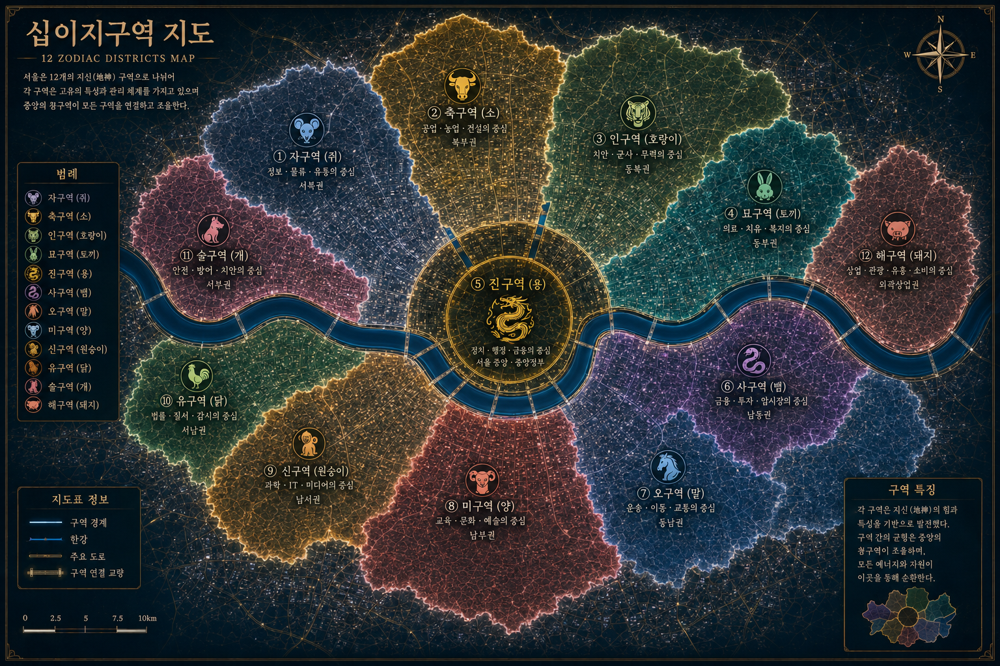

캐릭터 이름
20세 · 여성 · 자구역
정보와 소문이 넘쳐나는 자구역에서 활동하는 정보상. 뛰어난 감각과 은신 능력을 지녔다.
TWELVE ZONE ARCHIVE
지신 발현 이후 변화한 세계와 열두 구역의 기록
THE WORLD OF TWELVE ZONES
정부는 혼란을 막기 위해 서울을 12개의 특별관리구역으로 나누었다. 같은 지신을 가진 사람들은 자신의 지신구역에서 생활하도록 강제되었으며, 시간이 지나면서 각 구역에는 해당 지신의 특성이 도시 자체에 스며들기 시작했다.
CHARACTERS OF TWELVE ZONES
20세 · 여성 · 자구역
정보와 소문이 넘쳐나는 자구역에서 활동하는 정보상. 뛰어난 감각과 은신 능력을 지녔다.
24세 · 남성 · 축구역
압도적인 힘과 내구력을 가진 인물. 겉보기와 달리 주변 사람들을 챙기는 성격이다.
22세 · 여성 · 인구역
강함을 명예로 생각하는 인구역의 전투원. 뛰어난 반사신경과 전투 감각을 자랑한다.
21세 · 여성 · 묘구역
빠른 회복력과 민첩성을 가진 의료 관계자.
25세 · 남성 · 진구역
희귀한 용 지신 능력자. 강력한 원소계 능력을 보유하고 있다.
23세 · 여성 · 사구역
감각 조작과 독을 사용하는 위험한 인물. 암시장과 깊은 관계를 가지고 있다.
20세 · 남성 · 오구역
도시 최고의 속도를 자랑하는 배달원.
22세 · 여성 · 미구역
정신 안정과 치유 능력을 가진 성원의 치유사.
19세 · 남성 · 신구역
기계와 장비를 자유롭게 다루는 천재 엔지니어.
21세 · 여성 · 유구역
짧은 미래를 감지할 수 있는 방송 기자.
26세 · 남성 · 술구역
뛰어난 후각과 추적 능력을 가진 보안 전문가.
24세 · 여성 · 해구역
뛰어난 생명력과 재생 능력을 가진 인물.
MAP OF THE TWELVE ZONES
